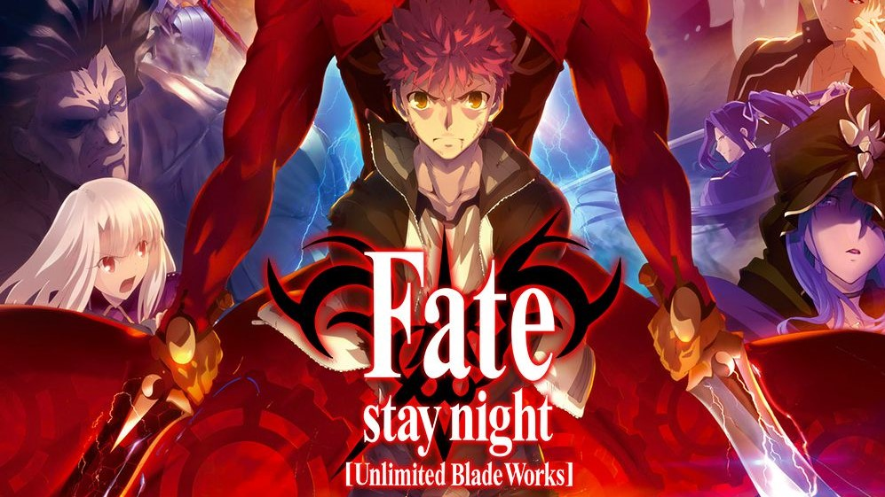
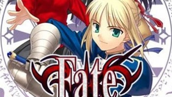

--- Mengwibu bersamaku ---
Navigasi Kosong

Fate/stay night : Unlimited Blade Works
Fate UBW atau Route Rin Tosaka bercerita tentang kota Fuyuki adalah kota yang dikelilingi oleh laut dan pegunungan menjadi kota untuk ritual kuno. Untuk mewujudkan mitos Cawan Suci, yang dikatakan bisa memberikan setiap keinginan dair pemiliknya. Tujuh Master memberikan tujuh roh heroik yang dipilih oleh Cawan. Roh-roh heroik atau Servants tersebut antara lain adalah: Saber, Lancer, Archer, Rider, Caster, Assasin dan Berseker. Setiap master akan membuat kontrak dengan Servant mereka dan bertarung dengan Master dan Servant lainnya sampai mati dan hanya tersisa satu pasangan yang disebut Perang Cawan Suci.

Fate/Stay Night BD Batch Sub Indonesia
Fate Stay Night atau Route Saber bercerita mitos Cawan Suci, yang dikatakan bisa memberikan setiap keinginan dair pemiliknya. Tujuh Master memberikan tujuh roh heroik yang dipilih oleh Cawan. Roh-roh heroik atau Servants tersebut antara lain adalah: Saber, Lancer, Archer, Rider, Caster, Assasin dan Berseker. Setiap master akan membuat kontrak dengan Servant mereka dan bertarung dengan Master dan Servant lainnya sampai mati dan hanya tersisa satu pasangan yang disebut Perang Cawan Suci.
My Social Media
Admin Yazz